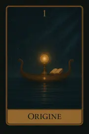
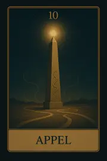
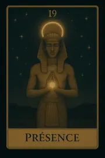
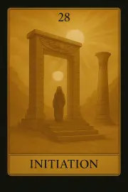

Famille 1 – Râ (Soleil)
Cette famille explore l'origine de soi, le jaillissement de l'identité et la dynamique de commencement. Elle est liée au Soleil et à Râ, source de création et d'éveil personnel.
Carte 1 – Origine
Mots-clés : Commencement, Naissance, Lancement, Inspiration, Illumination
Numérologie : 1 – Début, Étincelle, Unicité
Planète principale : Soleil
Divinité principale : Râ
Planète secondaire : Soleil
Divinité secondaire : Râ
Interprétation de la carte 1 : Origine (droite)
1. Caractère de la personne
La carte Origine incarne une personne qui est naturellement créative, optimiste, et énergique. Sous l’influence du Soleil et de Râ, cette personne a une vision claire de ce qu’elle veut accomplir dans la vie et est souvent perçue comme un leader naturel. Elle est dotée d'une forte énergie intérieure, qui lui permet de lancer des projets avec enthousiasme et confiance. Son caractère est marqué par une forte capacité à créer, à évoluer et à innover, sans crainte de prendre des initiatives. C’est un individu radiant, capable d’inspirer les autres par sa présence lumineuse.
2. Plan affectif
Dans les relations affectives, Origine symbolise l’émergence d’une nouvelle relation ou le début d’une dynamique amoureuse basée sur la confiance, l’authenticité, et la croissance personnelle. La personne peut vivre une phase de découverte mutuelle, où les énergies créatrices et l'évolution personnelle sont au cœur de la relation. Le Soleil et Râ apportent une clarté lumineuse à la vie affective, en faisant émerger des relations sincères et des projets de vie communs.
3. Plan matériel
Sur le plan matériel, Origine annonce le début d’une nouvelle entreprise ou la création d’un projet professionnel. Cette carte indique des opportunités pour initier des projets innovants dans le monde matériel, qu’il s’agisse de lancer un business ou de concrétiser une idée ambitieuse. L’influence du Soleil donne l'énergie nécessaire pour transformer des idées en réalité tangible. C’est un excellent moment pour démarrer quelque chose de nouveau, bien que cela exige un certain engagement et une vision claire de l'avenir.
4. Plan professionnel
Professionnellement, Origine est une carte de démarrage et d’initiation. Elle marque l’entrée dans une nouvelle phase professionnelle ou la création d’un projet porteur de réussite. La personne a les qualités nécessaires pour lancer une carrière ou changer de direction professionnelle. Cette carte est liée à une inspiration forte et à la réalisation de grands projets. L’énergie du Soleil et de Râ permet à cette personne de faire face aux défis professionnels avec confiance et une force intérieure indomptable.
5. Plan spirituel
Sur le plan spirituel, Origine symbolise le commencement d’une quête spirituelle ou une évolution intérieure significative. C'est une carte qui annonce un éveil spirituel et un appel intérieur à commencer un chemin de réalisation divine. La personne ressent le besoin de se connecter à quelque chose de plus grand qu’elle-même et est prête à s’engager dans une exploration spirituelle profonde. L’influence du Soleil éclaire le chemin spirituel, apportant lumière et clarté à chaque étape de cette transformation intérieure.
Carte 1 : Origine (inversée)
Même si la carte Origine est influencée de manière très positive par le Soleil et Râ, son inversion indique des freins temporaires dans les processus de création ou de réalisation. Cependant, cela reste une influence transitoire.
1. Caractère de la personne
Lorsqu'inversée, Origine peut indiquer une perte de direction ou une incapacité à démarrer de nouveaux projets. La personne pourrait être dans une phase de doute, d’incertitude ou de blocage créatif. Il peut aussi y avoir une incohérence dans ses actions, un manque de clarté intérieure, ou une peur d'échouer. L'influence du Soleil et de Râ est toujours présente, mais elle est voilée, ce qui signifie que la personne peut ne pas voir clairement la voie à suivre.
2. Plan affectif
Dans les relations, l’inversion d’Origine pourrait signifier des relations stagnantes ou des difficultés à commencer ou à faire évoluer une relation. Il peut aussi y avoir un manque de clarté émotionnelle, des mensonges ou des illusionnements. La relation peut être marquée par une période de confusion, où les intentions ne sont pas claires, ou bien il pourrait y avoir un manque d'engagement véritable.
3. Plan matériel
Sur le plan matériel, l’inversion d’Origine peut signifier des difficultés à lancer ou à concrétiser un projet important. Des obstacles externes ou des blocages internes peuvent empêcher la personne de réaliser ses idées. Cela peut aussi indiquer des problèmes de ressources, des difficultés financières, ou une incapacité à démarrer un projet concret malgré une vision forte. Cependant, comme l’influence du Soleil et de Râ est toujours présente, les obstacles peuvent être surmontés avec patience et persévérance.
4. Plan professionnel
En position inversée, Origine peut symboliser une phase de stagnation professionnelle, où les projets n’avancent pas ou où des retards se produisent. Cela peut aussi signifier un manque de direction dans la carrière, ou une incapacité à prendre des décisions professionnelles claires. La personne pourrait ressentir un manque d'opportunités ou avoir des doutes sur la voie à suivre. Néanmoins, l’influence de Râ permet de se réorienter, mais cela nécessitera réflexion et réalignement avec la vision initiale.
5. Plan spirituel
Spirituellement, l’inversion d’Origine peut signaler un désalignement spirituel, une période de confusion ou un manque de direction intérieure. La personne peut ne pas savoir où se dirige spirituellement ou se sentir perdue dans sa quête intérieure. Cela peut aussi indiquer une résistance au changement spirituel ou un manque d’ouverture à une évolution spirituelle plus profonde.
Résumé de la carte 1 : Origine
Origine, même inversée, reste fortement influencée par l’énergie du Soleil et de Râ, ce qui la maintient positive, bien que des retards ou des blocages temporaires puissent se manifester dans tous les domaines de la vie. Lorsqu’elle est inversée, elle indique des freins à la création ou un manque de direction, mais cela n’est que temporaire. L'influence du Soleil et de Râ montre que la lumière intérieure est toujours présente et que les obstacles peuvent être surmontés avec du temps et de l'effort.
Carte 10 – Appel
Mots-clés : : Invitation, Inspiration divine, Soutien spirituel, Guidance, Révélation
Numérologie : 10 – Nouveau départ, Révélation, Destinée, Leadership
Planète principale : Soleil
Divinité principale : Râ
Planète secondaire : Terre
Divinité secondaire : Geb
Interprétation de la carte 10 : Appel (droite)
1. Caractère de la personne
La carte Appel symbolise une personne qui reçoit un appel intérieur profond, un soutien spirituel qui la guide vers ses objectifs supérieurs. Cette carte évoque une personne dotée d’un sens aigu de la mission et du but, qui ressent une connexion divine ou une inspiration supérieure pour mener sa vie de manière alignée avec sa vérité intérieure. Sous l'influence de Soleil et de Râ, cette personne est énergique et pleine de lumière intérieure, cherchant à rayonner son énergie positive et à suivre son destin avec clarté et conviction. L'influence de Terre et de Geb lui apporte une stabilité et un ancrage dans ses actions, favorisant une réalisation concrète de ses aspirations spirituelles. Elle pourrait être perçue comme un guide ou une personne inspirante, guidant les autres à travers son propre cheminement spirituel.
2. Plan affectif
Sur le plan affectif, Appel symbolise une relation profondément spirituelle ou une connexion forte avec un partenaire qui partage les mêmes valeurs spirituelles. Cela peut aussi représenter un moment où une relation est appelée à évoluer ou à s'épanouir dans une direction nouvelle, sous l'influence de la guidance divine. La carte peut également signaler que l'une des personnes dans la relation reçoit un appel intérieur à suivre un chemin personnel, ce qui peut créer un moment de transition ou de révélation dans la relation. L'influence du Soleil et de Râ éclaire cette transition, apportant énergie et lumière pour guider la relation vers de nouveaux horizons, tandis que Terre et Geb assurent que cette transition se fait de manière stable et ancrée dans la réalité.
3. Plan matériel
Sur le plan matériel, Appel annonce la révélation d'une opportunité importante, qu'il s'agisse d'un projet, d'une carrière ou d'un investissement. Cette carte indique que la personne est sur le point de découvrir ou de recevoir un soutien spirituel qui l'aidera à avancer dans son parcours matériel. Cela pourrait également signifier la manifestation d'une aide divine dans la réalisation de ses projets, donnant à la personne la force et la motivation nécessaires pour aller de l’avant. L’influence de Soleil et de Râ apporte la clarté et la lumière pour voir les opportunités matérielles qui se présentent, tandis que l’influence de Terre et de Geb assure que les choses se concrétisent de manière stable et réaliste.
4. Plan professionnel
Dans le domaine professionnel, Appel symbolise une opportunité ou une direction qui se dévoile de manière inspirante. Cela pourrait être un nouveau projet ou un changement de direction professionnelle qui appelle à être suivi. La carte suggère que la personne reçoit une guidance spirituelle pour prendre des décisions importantes concernant sa carrière. L’influence de Soleil et de Râ illumine cette période de transition professionnelle, apportant une vision claire de l’avenir et un épanouissement personnel. Cependant, l’influence de Terre et de Geb ancre cette direction dans la réalité, assurant que le chemin choisi est pragmatique, stable et basé sur des valeurs solides.
5. Plan spirituel
Spirituellement, Appel est une carte de révélation divine et de réception d’une guidance supérieure. Cela représente un moment où la personne est appelée à suivre son vrai chemin spirituel, à répondre à un appel intérieur pour évoluer spirituellement. Cette carte symbolise un réveil spirituel où la personne prend pleinement conscience de sa mission divine et des opportunités qui s'offrent à elle pour progresser dans sa quête spirituelle. L’influence de Soleil et de Râ apporte une lumière éclatante et une énergie rayonnante, facilitant l'épanouissement spirituel. L’influence de Terre et de Geb offre un ancrage nécessaire pour rendre cette révélation spirituelle pratique et applicable dans le monde matériel.
Carte 10 : Appel (inversée)
Lorsqu'elle est inversée, la carte Appel suggère une résistance au changement, une difficulté à entendre ou à suivre l'appel intérieur. Cela peut indiquer une période où la personne ignore sa propre guidance ou se sent déconnectée de sa voie spirituelle. Les révélations divines sont présentes, mais elles sont bloquées par des peurs, des doutes ou des distractions.
1. Caractère de la personne
En position inversée, Appel représente une personne qui lutte contre son propre chemin spirituel, qui ignore son intuition ou qui refuse d’entendre l’appel intérieur à évoluer. Cette carte pourrait signaler une personne qui est déconnectée de ses aspirations profondes ou qui craint de répondre à son appel personnel. Elle peut être dans une période de blocage spirituel ou de manque de direction claire.
2. Plan affectif
Sur le plan affectif, Appel inversée symbolise une relation bloquée par un manque de communication profonde ou par une désunion spirituelle entre les partenaires. Cela peut aussi signifier que l’un des partenaires ignore ou rejette l’appel du cœur et ne suit pas la voie d’évolution relationnelle. La carte suggère un manque d’harmonie ou de guidance spirituelle dans la relation.
3. Plan matériel
Dans le domaine matériel, l’inversion de Appel peut indiquer une difficulté à percevoir les opportunités ou à reconnaître les signes qui guideraient la personne vers la réussite matérielle. La carte inversée suggère que la personne peut lutter contre l’inspiration divine, ne parvenant pas à se lancer dans un projet ou à saisir une occasion qui pourrait être très bénéfique. Cependant, l'influence de Soleil et de Râ indique que la personne peut toujours trouver l'éclairage nécessaire, mais seulement si elle fait preuve d'ouverture et accepte de répondre à son propre appel intérieur.
4. Plan professionnel
Professionnellement, Appel inversée peut indiquer une opportunité professionnelle manquée ou une période d’indécision concernant un changement de direction dans la carrière. La personne peut se sentir incapable de répondre à un appel professionnel ou être dans une phase de doute par rapport à ses compétences et son orientation. Cette carte suggère un besoin de réflexion et d’ouverture pour saisir les opportunités professionnelles qui se présentent.
5. Plan spirituel
Spirituellement, Appel inversée symbolise une déconnexion spirituelle, un manque d’alignement avec le chemin spirituel. Cela peut indiquer que la personne refuse d’écouter son intuition ou se sent bloquée dans son parcours spirituel. Elle pourrait avoir du mal à accepter la révélation divine ou se sent perdue dans son cheminement spirituel. Cependant, l’influence de Soleil et de Râ montre que la lumière est toujours présente, et qu’il est possible de retrouver sa voie spirituelle, à condition d’accepter l’appel du cœur.
Résumé de la carte 10 : Appel
La carte Appel représente un appel intérieur divin à évoluer, à changer et à répondre à une guidance spirituelle. En position inversée, elle indique une résistance au changement, une déconnexion de l'appel intérieur ou une difficulté à percevoir les opportunités de transformation. Cependant, l'influence du Soleil et de Râ assure qu’il est toujours possible de répondre à cet appel si la personne accepte de s'ouvrir et de réévaluer sa direction.
Carte 19 – Présence
Mots-clés : : Être ici et maintenant, Conscience éveillée, Équilibre spirituel, Clarté, Manifestation
Numérologie : 19 – Lumière, Présence, Connexion au présent, Vérité intérieure
Planète principale : Soleil
Divinité principale : Râ
Planète secondaire : Jupiter
Divinité secondaire : Amon-Rê
Interprétation de la carte 19 : Présence (droite)
1. Caractère de la personne
La carte Présence représente une personne qui est profondément ancrée dans le moment présent. Elle est capable de vivre avec une conscience éveillée, pleinement présente dans chaque instant. Cette personne ne se laisse pas envahir par le passé ou l'avenir, mais se concentre sur ce qui se passe ici et maintenant. Sous l’influence de Soleil / Râ, elle rayonne d'une énergie vivante et éclairée, capable de faire face aux défis de la vie avec clarté et intégrité. L’influence secondaire de Jupiter / Amon-Rê donne une dimension de sagesse, d’ouverture d’esprit et de vision large, permettant à cette personne de manifester ses intentions et d’attirer la prospérité et la réussite.
2. Plan affectif
Dans le domaine affectif, Présence symbolise des relations où il est essentiel d’être pleinement présent pour l’autre, d’être attentif et conscient dans l’ici et maintenant. Cela peut être une carte de connexion profonde avec les autres, où les partenaires se comprennent sans mots, juste par une présence sincère et authentique. Cela signifie aussi que la relation s'épanouit lorsque chacun des partenaires est connecté à son propre être intérieur. L’influence de Soleil / Râ apporte une lumière chaleureuse et éclairante, tandis que Jupiter / Amon-Rê favorise une approche dynamique et expansive, permettant de manifester ensemble des projets communs dans une harmonie croissante.
3. Plan matériel
Sur le plan matériel, Présence indique un moment où la personne est parfaitement alignée avec ses objectifs et ses désirs. Elle est capable de manifester ses intentions et d'attirer des résultats concrets en restant focus sur le moment présent et en prenant des décisions équilibrées. C’est une carte qui encourage à être vigilant et réaliste dans la gestion de ses ressources, sans se laisser influencer par des distractions ou des préoccupations futures. L’influence de Soleil / Râ donne une énergie rayonnante pour réaliser ses projets, et Jupiter / Amon-Rê inspire une vision expansive, favorisant les opportunités et la croissance matérielle.
4. Plan professionnel
Dans le domaine professionnel, Présence symbolise un moment où il est essentiel de rester concentré sur ses objectifs et de manifester sa vision de manière claire et cohérente. Cette carte indique que le succès dans le travail ou un projet dépend de la capacité à être totalement engagé dans l’instant et à ne pas se laisser distraire par des éléments externes. Sous l’influence de Soleil / Râ, cette personne peut faire briller ses talents de manière éclatante, tandis que Jupiter / Amon-Rê favorise la réalisation des ambitions à long terme, grâce à une conscience éveillée et une perspective claire sur ce qui doit être accompli.
5. Plan spirituel
Spirituellement, Présence incarne une profonde connexion spirituelle avec l’instant présent. C’est une invitation à vivre pleinement chaque expérience sans se laisser emporter par les distractions mentales ou émotionnelles. L’influence de Soleil / Râ éclaire le chemin spirituel, apportant clarité intérieure et conscience. En même temps, Jupiter / Amon-Rê élargit la vision spirituelle, permettant une compréhension plus profonde des enseignements spirituels et une réalisation que tout est interconnecté. Cette carte suggère que la libération spirituelle se trouve dans la capacité à être totalement présent, à vivre le moment sans jugement ni attachement.
Carte 19 : Présence (inversée)
Lorsqu'elle est inversée, Présence symbolise une perte de connexion au moment présent, une dissipation de l’énergie et une tendance à se laisser envahir par les pensées liées au passé ou à l’avenir. Cela peut signifier que la personne est distraite ou détournée de son but, se laissant envahir par des préoccupations inutiles ou des soucis excessifs. Cette inversion peut aussi signifier un manque de conscience intérieure, un déséquilibre spirituel qui empêche la personne de se reconnecter à elle-même. L'inversion de cette carte appelle à un retour au présent, à se concentrer à nouveau sur l’essentiel et à récupérer son équilibre intérieur.
1. Caractère de la personne
En position inversée, Présence symbolise une personne qui a du mal à rester dans le moment présent. Elle peut être anxieuse, préoccupée par des pensées excessives, des régrets du passé ou des craintes de l’avenir. Cela peut signifier une personne dispersée, qui manque de concentration et qui n’arrive pas à manifester ses intentions de manière claire. Elle peut être constamment en quête de quelque chose, mais incapable de s’ancrer et de vivre l’instant.
2. Plan affectif
Sur le plan affectif, Présence inversée peut symboliser une relation où l’un des partenaires est déconnecté de l’autre, ou où il y a une perte de connexion émotionnelle. Cela peut aussi signifier des moments où les interactions dans la relation sont marquées par un manque de présence réelle ou une attention divisée. L'influence de Soleil / Râ en position inversée rend la personne moins disponible émotionnellement, et Jupiter / Amon-Rê suggère que la distance et le manque de profondeur sont les principaux obstacles à une relation épanouie.
3. Plan matériel
Dans le domaine matériel, l’inversion de Présence montre une distraction ou une perte de focus sur les objectifs et les projets. Cela peut signifier qu’on perd le fil dans un projet ou qu’on ne parvient pas à manifester concrètement ce que l’on désire. Il peut aussi y avoir une tendance à procrastiner, à se laisser emporter par des pensées inutiles ou des inquiétudes au lieu de prendre des actions concrètes. L’influence de Soleil / Râ en inversé peut signifier un manque de clarté dans les actions, et Jupiter / Amon-Rê met en évidence un déséquilibre dans la gestion des ressources et des opportunités.
4. Plan professionnel
Professionnellement, Présence inversée indique un déséquilibre dans la gestion de projets ou une incohérence dans la prise de décisions. Il peut y avoir un manque de concentration, des distractions constantes, ou une incapacité à rester engagé dans les tâches. Cela peut aussi signifier un désintérêt professionnel, où la personne n’arrive plus à manifester son potentiel dans le travail. L'influence de Soleil / Râ inversée empêche la personne de briller dans sa carrière, et Jupiter / Amon-Rê suggère qu’il est difficile de saisir les opportunités.
5. Plan spirituel
Spirituellement, l'inversion de Présence indique une perte de connexion avec la source spirituelle. La personne peut être déconnectée de son essence spirituelle, perdue dans des pensées irrationnelles ou des croyances qui ne sont pas alignées avec sa véritable nature. Elle pourrait avoir des difficultés à vivre dans l'instant, ce qui l'empêche d'atteindre une harmonie intérieure. La carte inversée invite à revenir à la pratique spirituelle et à se recentrer sur l’instant présent pour retrouver la paix intérieure.
Résumé de la carte 19 : Présence
La carte Présence incarne l’importance de vivre pleinement l’instant présent, d’être connecté à soi-même et de manifester ses désirs dans la réalité. En position inversée, elle représente un déséquilibre où la personne est déconnectée, distraite, ou incapable de rester concentrée sur ce qui est essentiel. Cela indique un appel à revenir à l’instant présent et à réajuster son focus et son énergie.
Carte 28 – Initiation
Mots-clés : : Éveil, Passage, Rite de passage, Nouveau cycle, Ouverture spirituelle
Numérologie : 28 – Transition spirituelle, Éveil intérieur, Début d'un cycle spirituel, Transformation profonde
Planète principale : Soleil
Divinité principale : Râ
Planète secondaire : Mars
Divinité secondaire : Sekhmet
Interprétation de la carte 28 : Initiation (droite)
1. Caractère de la personne
La carte Initiation symbolise une personne qui traverse un moment de transformation profonde, marquant le début d'un nouveau cycle dans sa vie. Elle peut se retrouver face à un éveil intérieur où elle se sent prête à franchir une nouvelle étape. Cela représente une maturité intérieure et un passage à une nouvelle conscience, que ce soit dans sa vie personnelle, spirituelle ou émotionnelle. Sous l'influence de Soleil / Râ, la personne est pleine d’énergie positive, rayonnante et prête à s’ouvrir à de nouvelles perspectives. Mars / Sekhmet en influence secondaire donne à cette personne une force intérieure, une détermination et une audace pour franchir les étapes suivantes, même si ces étapes peuvent être marquées par des défis ou des obstacles. Cette carte montre qu’elle est prête à se réinventer et à avancer avec une vision claire de son chemin spirituel.
2. Plan affectif
Sur le plan affectif, Initiation symbolise un nouveau début dans les relations. Cela peut être une phase de renouveau dans une relation existante ou le début d'une nouvelle relation marquée par une compréhension plus profonde et plus spirituelle. Cette carte montre que la personne est prête à grandir dans ses relations, à transcender les limitations du passé, et à entrer dans des relations plus authentiques et épanouissantes. L’influence de Soleil / Râ apporte une lumière nouvelle à cette relation, tandis que Mars / Sekhmet apporte une énergie dynamique pour affronter les défis affectifs et se renouveler dans l’amour et la compréhension.
3. Plan matériel
Dans le domaine matériel, Initiation symbolise un nouveau départ ou une reprise après un échec. Il peut s'agir d’un projet professionnel ou d’une démarche financière qui entre dans un nouveau cycle de croissance. Cette carte annonce que la personne est prête à aborder les choses sous un nouvel angle, avec une vision claire et consciente. L'influence de Soleil / Râ donne une énergie lumineuse, propice à l’avancement et à la concrétisation des objectifs matériels, tandis que Mars / Sekhmet donne la force d'agir et de surmonter les obstacles pour atteindre ses buts.
4. Plan professionnel
Professionnellement, Initiation représente un nouveau cycle dans la carrière. Cela peut symboliser une nouvelle opportunité professionnelle, un changement de direction ou l’émergence d’une nouvelle vision pour le travail ou les projets entrepris. Cette carte indique qu'une transformation est en cours, et que la personne est sur le point de passer à un niveau supérieur dans sa carrière ou dans un projet qu’elle développe. Sous l'influence de Soleil / Râ, la personne est prête à rayonner dans son domaine, et avec l'influence de Mars / Sekhmet, elle possède la détermination et la force nécessaires pour réussir.
5. Plan spirituel
Spirituellement, Initiation marque un éveil spirituel profond. La personne est prête à franchir un passage initiatique, où elle entre dans une nouvelle phase de conscience et de compréhension spirituelle. Cette carte symbolise le début d’un nouveau chemin spirituel, marqué par une ouverture intérieure et la réception de nouvelles révélations spirituelles. L’influence de Soleil / Râ éclaire ce chemin avec la lumière de la vérité, tandis que Mars / Sekhmet donne la force intérieure et le courage nécessaires pour surmonter les épreuves spirituelles et avancer dans une nouvelle dimension spirituelle.
Carte 28 : Initiation (inversée)
Lorsqu'elle est inversée, Initiation peut symboliser une résistance au changement ou une difficulté à franchir un nouveau cycle. Cela peut signifier que la personne est dans une période de blocage spirituel, ou qu’elle refuse d’accepter les transformations nécessaires. Il peut y avoir une difficulté à s’engager pleinement dans un processus initiatique, ou une peur d'entrer dans l'inconnu. L'inversion de cette carte incite à se libérer des peurs qui empêchent l’éveil spirituel et à se lancer dans le processus de transformation, même si cela implique des difficultés temporaires.
1. Caractère de la personne
En position inversée, Initiation peut symboliser une personne qui est bloquée dans un ancien cycle, résistante à la transformation ou à l’éveil intérieur. Elle pourrait être en proie à des peurs profondes ou des doutes qui l’empêchent de passer à une nouvelle étape de sa vie. Il est nécessaire pour cette personne de faire face à ses peurs et de s’engager pleinement dans le processus de transformation.
2. Plan affectif
Sur le plan affectif, Initiation inversée indique qu'une relation est bloquée ou qu’une personne a des difficultés à évoluer dans sa vie émotionnelle. Cela peut signifier qu'il y a une résistance au changement ou un refus de voir les choses sous un autre angle. La carte inversée suggère qu’il est important d’être ouvert au changement et de ne pas laisser les anciens schémas affectifs limiter la relation.
3. Plan matériel
Dans le domaine matériel, Initiation inversée représente une résistance à passer à un nouveau cycle dans le domaine financier ou professionnel. Cela peut signifier que la personne refuse de prendre un nouveau départ ou de se lancer dans de nouveaux projets à cause de la peur de l’inconnu ou de doute. Il est important de surmonter cette réticence pour avancer et créer de nouvelles opportunités.
4. Plan professionnel
Professionnellement, Initiation inversée symbolise un manque de vision claire ou un blocage dans la carrière. La personne pourrait être incapable de progresser ou de faire évoluer ses projets à cause de peurs ou de manque de direction. L'inversion de cette carte incite à prendre le temps nécessaire pour se recentrer et réévaluer les objectifs professionnels, afin de trouver une nouvelle direction.
5. Plan spirituel
Spirituellement, Initiation inversée représente une résistance au chemin spirituel. La personne pourrait être bloquée dans une phase d’ignorance ou de doute spirituel, ne se sentant pas prête à franchir une nouvelle étape. Cela peut aussi symboliser un manque de foi ou une fermeté d’esprit à recevoir de nouveaux enseignements spirituels. L'inversion de cette carte encourage à ouvrir l’esprit et à s'abandonner au processus spirituel, même si cela semble difficile ou incertain.
Résumé de la carte 28 : Initiation
La carte Initiation symbolise un passage vers un nouveau cycle spirituel, un éveil intérieur et un processus de transformation. En position inversée, elle représente une résistance au changement ou une difficulté à franchir un nouveau seuil. Cette carte nous invite à embrasser la transformation, à surmonter nos peurs et à ouvrir notre esprit à l'évolution qui se présente.
Carte 37 – Guide

Mots-clés : : Soutien divin, Orientation, Direction spirituelle, Protection, Accompagnement
Numérologie : 37 – Guidance spirituelle, Accompagnement divin, Clarté intérieure, Protection dans le chemin spirituel
Planète principale : Soleil
Divinité principale : Râ
Planète secondaire : Mercure
Divinité secondaire : Thot
Interprétation de la carte 37 : Guide (droite)
1. Caractère de la personne
La carte Guide représente une personne qui est guidée par une force supérieure et qui est ouverte à la protection divine et aux conseils spirituels. Cette carte indique que la personne suit un chemin qui est en harmonie avec sa voie spirituelle, se sentant souvent guidée par son intuition ou par des signes provenant de l’extérieur. L’influence de Soleil / Râ apporte une lumière intérieure, aidant la personne à dissiper les ténèbres de l'incertitude et à avancer dans la bonne direction. Mercure / Thot ajoute une clarté mentale qui permet de prendre des décisions éclairées sur ce chemin. Cette carte symbolise la confiance en la guidance divine et en la direction spirituelle que l’on reçoit.
2. Plan affectif
Sur le plan affectif, Guide indique que la personne est soutenue dans ses relations personnelles par des forces extérieures, qu’il s’agisse de protection spirituelle ou d’un soutien sincère de la part des autres. Cela peut symboliser un moment où la personne reçoit un conseil précieux ou une orientation dans ses relations. C’est un moment où la guidance spirituelle se reflète dans la manière dont elle interagit avec les autres, apportant une harmonie et une direction aux relations. La personne peut se sentir profondément protégée et guidée dans ses décisions affectives, en étant accompagnée spirituellement tout au long de son parcours.
3. Plan matériel
Dans le domaine matériel, Guide représente un soutien externe ou un accompagnement dans la prise de décisions importantes. Cela peut signifier qu’une force supérieure, qu’il s’agisse de conseils professionnels, d’opportunités ou de synchronicités, est en train de guider la personne vers le succès dans ses projets. Cette carte symbolise une protection divine qui veille sur les efforts matériels de la personne, lui assurant que ses actions sont alignées avec son but supérieur. L'influence de Mercure / Thot favorise la communication claire et l’obtention d’informations cruciales qui orienteront les décisions matérielles.
4. Plan professionnel
Professionnellement, Guide indique que la personne est dirigée vers des opportunités ou reçoit un soutien précieux dans sa carrière ou dans un projet professionnel. Cela peut signifier qu’elle a la chance d’être accompagnée par un mentor, ou qu’elle bénéficie de conseils divins et de soutien spirituel dans ses choix professionnels. L’influence de Soleil / Râ favorise la clarté dans les décisions professionnelles, et Mercure / Thot soutient cette direction par une compréhension aiguë des dynamiques professionnelles et des bonnes stratégies à adopter.
5. Plan spirituel
Spirituellement, Guide représente la présence divine qui accompagne et protège la personne dans son voyage intérieur. Cette carte symbolise l’accès à des enseignements spirituels ou à des pratiques spirituelles qui fournissent la clarté nécessaire pour évoluer. Elle rappelle à la personne qu'elle n'est jamais seule sur son chemin spirituel, et qu'elle reçoit toujours la guidance nécessaire pour avancer dans la lumière. Soleil / Râ apporte une énergie rayonnante qui éclaire le chemin spirituel, tandis que Mercure / Thot favorise une compréhension profonde des enseignements spirituels et la capacité de les intégrer dans la vie quotidienne.
Carte 37 : Guide (inversée)
Lorsqu'elle est inversée, Guide peut symboliser une perte de direction spirituelle, un déséquilibre ou une absence de guidance. La personne peut se sentir perdue ou incertaine quant à la direction à prendre. Il peut s’agir d’une période où les signes divins ne sont pas clairs ou où la personne se sent déconnectée de son chemin spirituel. L’inversion de cette carte appelle à chercher activement des réponses et à rétablir la connexion spirituelle pour retrouver l’orientation et le soutien divin nécessaires.
1. Caractère de la personne
En position inversée, Guide peut indiquer une personne qui se sent désorientée ou qui a du mal à trouver son chemin spirituel. Elle peut se sentir coupée de son intuition ou incapable de comprendre les signes divins qui lui sont envoyés. Cette carte suggère que la personne doit chercher un soutien extérieur ou rétablir sa connexion avec sa source spirituelle pour retrouver sa voie.
2. Plan affectif
Sur le plan affectif, Guide inversée peut signifier que la personne se sent perdue dans ses relations ou incapable de trouver une direction claire dans sa vie amoureuse. Cela pourrait également symboliser une relation où la personne se sent désorientée ou sans soutien affectif. L'inversion de cette carte incite à chercher une aide extérieure pour résoudre les conflits ou retrouver l’harmonie dans la relation.
3. Plan matériel
Dans le domaine matériel, Guide inversée peut signifier que la personne se trouve dans une situation où elle manque de direction ou de conseils concernant ses finances ou ses projets. Cela peut aussi symboliser un manque de clarté dans les décisions professionnelles ou un désalignement entre les objectifs matériels et spirituels. L’inversion suggère de chercher des ressources extérieures et de réévaluer les décisions matérielles en alignant mieux l’action avec l’intuition ou la guidance divine.
4. Plan professionnel
Professionnellement, Guide inversée indique une période de confusion ou d’indécision professionnelle, où la personne ne trouve pas de soutien externe ou de mentorat. Elle peut se sentir déroutée dans ses choix de carrière ou être confrontée à un manque de direction claire. L'inversion de cette carte suggère de rechercher activement des conseils professionnels et de clarifier les objectifs pour avancer.
5. Plan spirituel
Spirituellement, Guide inversée représente une période où la personne se sent éloignée de sa guidance divine ou perdue sur son chemin spirituel. Cela pourrait être le résultat d'un manque de pratique spirituelle ou d'une déconnexion des enseignements spirituels. L’inversion de cette carte incite à chercher activement à se reconnecter à sa voie spirituelle, à demander aide et conseils divins, et à rééquilibrer sa pratique spirituelle pour retrouver le soutien dont elle a besoin.
Résumé de la carte 37 : Guide
La carte Guide symbolise un soutien divin qui nous guide et nous protège, assurant que nous sommes sur la bonne voie. En position inversée, elle représente une période de désorientation ou de manque de direction spirituelle, appelant la personne à chercher des moyens de se reconnecter avec son guide intérieur ou à demander des conseils externes pour retrouver son chemin.
Carte 46 – Beauté

Mots-clés : : Harmonie, Création esthétique, Appréciation, Équilibre intérieur, Réconfort
Numérologie : 46 – Équilibre et harmonie intérieure, Appréciation des aspects positifs de la vie, Réconfort esthétique, Connexion à la beauté intérieure et extérieure
Planète principale : Soleil
Divinité principale : Râ
Planète secondaire : Vénus
Divinité secondaire : Hathor
Interprétation de la carte 46 : Beauté (droite)
1. Caractère de la personne
La carte Beauté symbolise une personne qui est en paix avec elle-même et qui trouve un équilibre intérieur profond. Elle est sensible à la beauté dans le monde autour d’elle et peut exprimer de l'harmonie dans ses actions et pensées. Cette carte montre quelqu’un qui sait apprécier et célébrer la création esthétique sous toutes ses formes, que ce soit dans l'art, la nature ou dans les relations humaines. L’influence de Soleil / Râ apporte cette lumière intérieure, et l’énergie de Vénus / Hathor accentue l’aspect de la création esthétique, de l’amour de la beauté et de l’harmonie dans la vie. Cela suggère aussi une capacité à créer de l’harmonie dans son entourage.
2. Plan affectif
Sur le plan affectif, Beauté représente des relations harmonieuses où l’on se sent en équilibre émotionnel avec les autres. Cela peut aussi symboliser une connexion profonde avec les personnes qui partagent les mêmes valeurs esthétiques et spirituelles. Cette carte invite à célébrer la beauté de l'amour, la tendresse partagée, et les moments simples mais profonds de bonheur avec les proches. L’influence de Vénus / Hathor met l'accent sur l’appréciation mutuelle, l’équilibre dans les relations et l’harmonie émotionnelle.
3. Plan matériel
Dans le domaine matériel, Beauté symbolise une approche équilibrée des biens matériels et de l’esthétique. Cela peut être le moment de réévaluer l’environnement physique dans lequel on évolue, en s’assurant que l’on crée un espace harmonieux et agréable. Cela inclut la recherche d’une esthétique fonctionnelle dans la vie quotidienne et le lieu de travail, où les objets, les espaces et les actions sont choisis non seulement pour leur utilité, mais aussi pour leur beauté et leur capacité à nourrir l'âme. Vénus / Hathor invite à apprécier la beauté de la simplicité et à cultiver un environnement équilibré.
4. Plan professionnel
Professionnellement, Beauté symbolise la capacité à créer de l’harmonie dans le travail, à valoriser l’aspect créatif et esthétique dans les projets ou l’environnement de travail. Cela peut signifier que la personne excelle dans un domaine artistique, créatif, ou tout simplement dans la création d’un environnement harmonieux dans lequel elle ou les autres peuvent s’épanouir. Soleil / Râ éclaire cette quête de beauté professionnelle, et Vénus / Hathor soutient la recherche de l’équilibre dans les relations professionnelles et dans la gestion des projets.
5. Plan spirituel
Spirituellement, Beauté symbolise l’harmonie intérieure qui naît lorsque l’on est connecté à la beauté divine de l’univers. Cela représente une période où l'on peut ressentir une connexion plus profonde avec l’univers et la création spirituelle. Cette carte nous rappelle que la beauté n'est pas seulement extérieure, mais aussi intérieure. Elle nous invite à cultiver un équilibre spirituel qui nourrisse l'âme et l’esprit, à apprécier les petites choses de la vie et à trouver l'harmonie spirituelle dans chaque aspect de notre existence. Vénus / Hathor encourage à honorer les aspects esthétiques du divin, et à rechercher la paix intérieure à travers cette appréciation.
Carte 46 : Beauté (inversée)
En position inversée, Beauté symbolise une perte d’équilibre, un déséquilibre intérieur ou une difficulté à apprécier ce qui est beau dans la vie. Cela peut indiquer que la personne ne se reconnaît plus dans ce qui lui apporte l'harmonie, ou qu’elle traverse une période où elle a du mal à trouver la beauté dans les choses simples. L’inversion peut aussi signaler un manque de confiance en soi ou un déséquilibre dans les relations, où la personne se sent invisible ou non appréciée. La carte incite à rechercher l’harmonie intérieure et à réévaluer les relations et les choix de vie pour retrouver l'équilibre.
1. Caractère de la personne
En position inversée, Beauté représente une personne qui éprouve difficulté à trouver l'équilibre intérieur. Elle peut se sentir désorientée, perdre la confiance en elle-même et ne pas voir la beauté dans sa propre vie. L'inversion indique qu'il est important de réajuster ses perceptions, de travailler sur l’amour-propre et de trouver un chemin qui réconcilie les tensions intérieures.
2. Plan affectif
Sur le plan affectif, Beauté inversée indique des relations déséquilibrées, où l’harmonie est absente. Cela peut signifier des relations marquées par des conflits, des malentendus, ou des attentes non satisfaites. L’inversion indique également un manque de réciprocité émotionnelle, où l’on ne se sent pas apprécié ou aimé. Cette carte appelle à réévaluer les relations et à chercher l’harmonie et la beauté dans les liens affectifs.
3. Plan matériel
Dans le domaine matériel, Beauté inversée peut signifier un environnement où l’harmonie est rompue, soit en raison de désordre, soit en raison de difficultés à apprécier les aspects esthétiques du quotidien. Cela peut être un moment où l’on se sent épuisé par les responsabilités matérielles, ou où l'on ne trouve plus de sens dans les aspects matériels de la vie. L’inversion de cette carte incite à réajuster ses priorités matérielles et à trouver un équilibre dans l’organisation de son espace.
4. Plan professionnel
Professionnellement, Beauté inversée peut signaler un environnement de travail où l’harmonie et la créativité sont bloquées. Cela peut être une période où le travail manque d’inspiration, où les relations professionnelles sont tendues, ou où il est difficile de trouver un équilibre dans la gestion des projets. L’inversion de cette carte indique qu’il est nécessaire de réévaluer les priorités professionnelles et de trouver des solutions créatives pour apporter plus de calme et d’harmonie dans le travail.
5. Plan spirituel
Spirituellement, Beauté inversée représente un déséquilibre spirituel ou un manque d’harmonie intérieure. Cela peut être le signe d’une déconnexion spirituelle, où la personne se sent déphasée par rapport à sa voie spirituelle ou n’arrive pas à trouver la beauté dans sa quête spirituelle. L’inversion incite à rechercher l’harmonie et à réévaluer ses croyances spirituelles, en se recentrant sur la beauté intérieure et universelle.
Résumé de la carte 46 : Beauté
La carte Beauté symbolise l’harmonie intérieure et l’appréciation de ce qui est beau dans la vie. Elle nous encourage à chercher l'équilibre dans les relations, le matériel, et dans notre propre intérieur. En position inversée, elle représente un déséquilibre, une perte de confiance ou un manque de réconfort, incitant à rechercher l’harmonie et à réévaluer les priorités pour retrouver l'équilibre et la beauté de la vie.
Carte 55 – Vérité

Mots-clés : : Vérité de l’âme, Révélation intérieure, Lumière originelle, Discernement profond, Renaissance de conscience, Maturité du regard, Clarté immuable
Numérologie : 55 – Maître nombre de transmutation. Vérité libérée par l’épreuve. Révélation solaire née du chaos. Mutation intérieure irréversible.
Planète principale : Soleil
Divinité principale : Râ
Planète secondaire : Saturne
Divinité secondaire : Osiris
Interprétation de la carte 55 : Vérité (droite)
1. Caractère de la personne
Cette carte désigne une personne en quête de vérité profonde, non pas extérieure, mais logée dans son propre cœur. Elle a traversé des périodes de doute, de chute ou de silence, et en ressort avec une vision claire, solide, indestructible. Râ lui donne la lumière intérieure. Saturne lui donne le temps. Osiris lui donne la sagesse issue de la mort symbolique. Ce n’est pas une personne qui parle beaucoup — mais quand elle parle, elle dit ce qui est.
2. Plan affectif
Dans le domaine affectif, cette carte indique un moment de lucidité. Elle pousse à reconnaître ce qui est juste, au-delà des désirs, illusions ou projections. Elle peut signifier une révélation intérieure sur ses propres besoins, ou sur la vérité cachée d’une relation. Ce n’est pas une carte de rupture, mais une carte d’alignement affectif profond : soit la relation se réajuste à la lumière, soit elle se dissout naturellement.
3. Plan matériel
Sur le plan matériel, cette carte invite à clarifier une situation opaque. Elle pousse à regarder avec honnêteté les choix passés, les engagements pris, les illusions entretenues. Elle ne juge pas — elle révèle. Si la structure est saine, elle en sort renforcée. Sinon, elle s’écroule, mais libère un nouvel ordre plus aligné avec l’être intérieur.
4. Plan professionnel
Professionnellement, cette carte peut indiquer un éveil de vocation, une prise de conscience de sa vraie place. Elle peut aussi montrer une insatisfaction profonde refoulée, qui finit par éclater. C’est la carte de ceux qui ne peuvent plus tricher avec leur mission d’âme. Ceux qui quittent ce qui n’est pas juste, même si cela coûte.
5. Plan spirituel
Spirituellement, c’est une carte d’éveil brutal mais sacré. La lumière ne vient pas d’un maître ou d’un livre, elle vient de l’intérieur, après la traversée de l’ombre. C’est l’instant où l’initié se rappelle qui il est, non par savoir, mais par reconnaissance vibratoire. Osiris est là : il veille, il accompagne, il atteste de la vérité retrouvée.
Carte 55 : Vérité (inversée)
En inversion, cette carte indique un refus de voir la vérité en soi, ou une peur de l’assumer. Cela peut se traduire par un attachement à des illusions, des justifications mentales, ou des vérités empruntées à l’extérieur. La personne peut fuir ce qui est pourtant évident en elle, ou refuser l’épreuve nécessaire à cette révélation.
1. Caractère de la personne
Personnalité confuse, en tension entre le désir d’authenticité et la peur de se regarder en face. Elle peut projeter la vérité sur les autres sans se l’appliquer. Elle évite l’introspection, ou n’entend pas la voix intérieure.
2. Plan affectif
Illusions affectives, relations fondées sur la peur ou le besoin, plutôt que sur la vérité. Une Tendance à refuser de voir une séparation nécessaire ou une incompatibilité évidente.
3. Plan matériel
Un refus de regarder une situation financière ou professionnelle avec lucidité. Des projets fondés sur des bases fausses ou mal alignées avec les véritables valeurs intérieures.
4. Plan professionnel
Une méconnaissance ou rejet de sa vraie vocation. Des conflits ou insatisfaction car la personne n’écoute pas son appel profond.
5. Plan spirituel
Des illusions spirituelles, projections de savoirs ou de croyances non incarnées. Une déconnexion de la lumière intérieure par peur de ce qu’elle pourrait révéler.
Résumé de la carte 55 : Vérité
La carte 55 symbolise la vérité de l’âme, celle qu’on ne reçoit pas, mais qu’on retrouve après l’épreuve. Elle éclaire depuis l’intérieur, comme un soleil sacré. Elle est la parole de Râ mûrie dans le silence de Saturne et authentifiée par Osiris. Elle ne peut être contournée, seulement reconnue, assumée, incarnée.
Carte 64 – Engagement

Mots-clés : : Départ structuré, responsabilité, entrée dans un système, engagement durable, contrat d’âme, condition implicite, structure imposée, poids du choix
Numérologie : 64 – Nouveau départ dans un cadre, Élan sous condition, commencement encadré, volonté contrainte
Planète principale : Soleil
Divinité principale : Râ
Planète secondaire : Uranus
Divinité secondaire : Maât
Interprétation de la carte 64 : Engagement (droite)
1. Caractère de la personne
La personne s’apprête à entrer dans une structure : nouveau travail, contrat, lien, choix formel. Elle est motivée par le besoin de paix, d’ordre, de sécurité (6), mais ce qu’elle rejoint est déjà structuré (4), fermé, encadré. Elle devra trouver sa lumière (Soleil) dans ce cadre sans se perdre. Maât et Uranus guettent la justesse du pas posé.
2. Plan affectif
Entrée dans une relation posée, formelle, voire institutionnelle. Peut marquer une étape importante (emménagement, mariage, engagement mutuel). Mais cette carte avertit : ce que tu acceptes ici t’engage profondément. Veille à ne pas sacrifier ta vérité pour préserver la forme.
3. Plan matériel
Un contrat, une alliance, une signature, un engagement professionnel. Le cadre semble protecteur, mais il peut devenir étouffant s’il est accepté sans discernement. Saturne attend de toi une clarté totale. Ce que tu signes t'engage sur le long terme.
4. Plan professionnel
Entrée dans un nouveau système : entreprise, institution, fonction, hiérarchie. Tu dois trouver comment exister dans ce cadre sans t’éteindre. La carte invite à observer la structure, à négocier ta juste place avant de t’y soumettre.
5. Plan spirituel
Adhésion à une voie, une tradition, un groupe. La carte avertit : ne confonds pas cadre spirituel et vérité intérieure. Maât veille : “Ce que tu engages ici, tu le porteras longtemps.” Si le chemin est juste, il te fortifiera. S’il ne l’est pas, il te brisera pour te libérer.
Carte 64 : Engagement (inversée)
1. Caractère de la personne
Refus de voir le poids de ses décisions. Tendance à s’engager trop vite, ou au contraire, à fuir l’engagement par peur du cadre. La personne doit apprendre que la liberté n’existe pas sans cadre, mais que le cadre doit être choisi avec justesse.
2. Plan affectif
Engagement affectif pris à la légère, ou inversement : peur chronique de l’engagement. Cette carte appelle à une clarification intérieure : veux-tu vraiment ce lien ? Ou veux-tu éviter la solitude ?
3. Plan matériel
Signature d’un contrat ou d’un engagement matériel sans avoir vu les conditions réelles. Peut désigner un piège administratif, un emploi limitant, une promesse coûteuse. Prends le temps de relire, de ressentir, de demander ce qui ne t’est pas dit.
4. Plan professionnel
Tu entres dans une structure, mais ta place réelle n’est pas claire. On attend de toi plus que ce que tu crois. Il est temps de poser des limites claires, ou de renégocier ton rôle.
5. Plan spirituel
Adhésion naïve à un dogme ou à une voie. Tu donnes ton énergie, ta parole, ton esprit à quelque chose que tu ne maîtrises pas. Maât demande : “Est-ce vrai ?” Uranus se prépare à faire éclater l’illusion si elle n’est pas reconnue.
Résumé de la carte 64 : Engagement
La carte Engagement marque un départ structuré, une entrée dans un cadre qui semble stable, mais qui porte un poids invisible. Ce que tu acceptes ici t’engage, te lie, te façonne. À l’endroit, elle parle d’un choix conscient, d’une assomption de responsabilité. À l’envers, elle révèle un engagement flou, ou un refus de voir les conséquences. Elle enseigne que tout engagement est un miroir de soi : “Ne t’engage jamais sans ressentir si ta lumière peut vivre dans ce cadre.”
Carte 73 – Humilité

Mots-clés : : Lumière intérieure, reconnaissance des limites, sagesse silencieuse, dernier regard avant l’inconnu, rayonnement épuré, offrande de soi, acceptation du mystère
Numérologie : 73 – Retour au point d’origine, mais réintégré après le cycle, Le créateur devenu réceptif, L’élan de vie s’incline devant le silence
Planète principale : Soleil
Divinité principale : Râ
Planète secondaire : Planète inconnue
Divinité secondaire : Sia
Interprétation de la carte 73 : Humilité (droite)
1. Caractère de la personne
La personne est dans une phase de retrait intérieur, non par peur, mais par conscience élevée. Elle a brillé, donné, guidé — et maintenant elle sait qu’il est temps de laisser place à plus grand qu’elle. Elle est sereine, épurée, alignée, et prête à se taire pour mieux entendre. Râ est devenu gardien du seuil. Sia l’attend dans le silence.
2. Plan affectif
C’est une carte de reconnaissance silencieuse de l’autre. Pas de conquête, pas de démonstration : juste la présence humble, ouverte, pleine de respect. On ne cherche plus à convaincre ou à imposer, on offre, on reçoit, on observe.
3. Plan matériel
Tu as atteint un stade où la réussite extérieure n’a plus d’importance. Tu regardes ce que tu as construit avec une lucidité paisible. Tu sais ce que cela t’a appris. Et tu es prêt à tout déposer, sans regret. Le vrai sens n’est plus dans l’avoir, mais dans l’être.
4. Plan professionnel
Tu arrives à la fin d’un cycle où tu as joué un rôle fort, central, éclairant. Maintenant, il s’agit de passer le flambeau, ou de changer de posture. Non pas parce que tu échoues — mais parce que ton feu a trouvé sa mesure. Tu ne guides plus par action… mais par présence.
5. Plan spirituel
C’est la carte du vrai mystique. Celui qui a vu la lumière… et qui sait maintenant qu’elle ne lui appartient pas. Il se tient nu, face à l’invisible. Il offre sa lumière au silence. Et Sia le reconnaît comme frère du feu devenu humble.
Carte 73 : Humilité (inversée)
1. Caractère de la personne
Tu résistes à reconnaître que le cycle est accompli. Tu veux encore briller, diriger, agir… Mais l’âme demande le silence. Tu dois cesser de chercher la lumière extérieure. Elle est déjà en toi — et elle veut se reposer.
2. Plan affectif
Tu veux encore prouver, parler, montrer. Mais l’autre n’a pas besoin de ton éclat. Il a besoin de ta vérité simple. Cesse de faire… Sois, écoute, accueille.
3. Plan matériel
Tu cherches encore à maintenir un projet, un statut, une place… Mais ce n’est plus le temps du contrôle. Accepte que ce qui a été fait a été juste, et que maintenant, tu peux laisser la forme se dissoudre.
4. Plan professionnel
Tu te maintiens dans un rôle par habitude de briller, par peur du vide. Mais l’univers t’appelle à changer de posture intérieure. Tu n’as plus à prouver. Tu as à transmettre par l’exemple silencieux.
5. Plan spirituel
Tu veux encore comprendre, savoir, expliquer. Mais le temps est à l’inclination, non à l’expansion. L’humilité est ta prochaine initiation. Ce que tu cherches ne s’apprend pas. Il s’entend dans le silence.
Résumé de la carte 73 : Humilité
Humilité est la carte de celui qui a brillé et qui sait maintenant se taire. Elle est le Soleil qui se couche dans la conscience, Râ qui reconnaît le mystère qu’il ne peut percer.
À l’endroit, elle offre l’acceptation totale, la sagesse douce, la vérité non démonstrative.
À l’envers, elle révèle une résistance au dépouillement, une lutte contre le vide initiatique.
Elle enseigne que la lumière la plus pure est celle qui sait quand s’éteindre pour écouter.